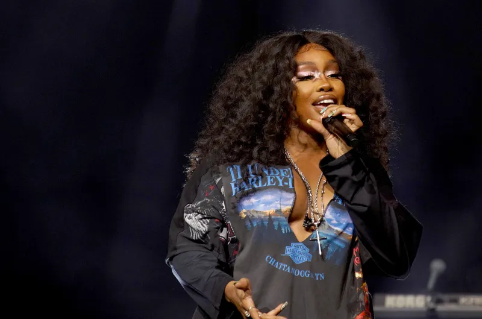
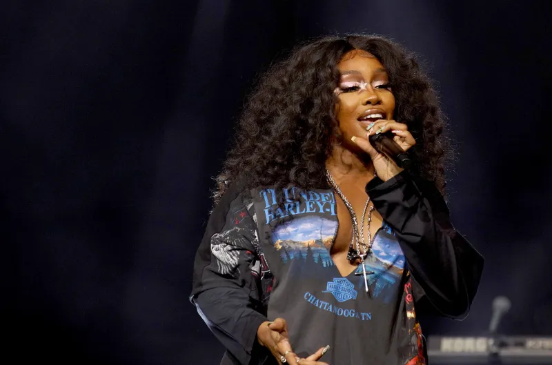

Music Artists
A music artist is someone who express their emotions through the sound of music. They write music to tell stories and to connect to their audience. They can sing, Rap, or create their own beat to their personality and experiences. They can turn any creative ideas into sound and make it tell a story with it, and by doing that they create their own fanbase who understands what they are going through/talking about. Every music artist has left a mark on music History These music artists create and inspire others to leave a mark on music history, and now you can go to the Musicians Hall of fame and see who made it. Will you get inspired?
For example, Doja cat was inspired by different forms of music styles, culture, and make it with her own twist. She grew up around music her mother and father both had their own creative careers and she was inspired by that. As a teen she started making beats on her laptop and her inspiration artists were Nicki Minaj, Erkah Badu, Pharrell, and Busta Rhymes. She loved making music her own and adding a little bit of everything to her music to make it sound more unique She used R&B, Rap, Pop, and other sounds to create her own style in music. Also from her personality she went viral from her first song "moo" and she was the inspiration for many memes today. Doja Cat started from zero followers, like all new musicians, and now in 2025 she had 13.8M followers. She's grew so much in the past 13 years and inspired millions.
 
